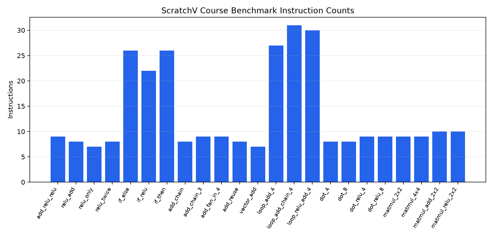

用例总数：23，通过：23，失败：0，通过率：100.0%
测试目录：tests_main，性能退化阈值：5.0%

| 用例 | 类别 | 状态 | 平均指令数 | 95%置信区间 | 变化率(%) | 是否退化 | 描述 |
|---|---|---|---|---|---|---|---|
| add_relu_relu | activation | PASS | 9.00 | ±0.00 | 0.00 | False | Add input and bias, then apply ReLU twice. |
| relu_add | activation | PASS | 8.00 | ±0.00 | 0.00 | False | Add input and bias, then apply one ReLU. |
| relu_only | activation | PASS | 7.00 | ±0.00 | 0.00 | False | Apply ReLU directly to a single input value. |
| relu_twice | activation | PASS | 8.00 | ±0.00 | 0.00 | False | Apply ReLU twice to the same activation path. |
| if_else | branch | PASS | 26.00 | ±0.00 | 0.00 | False | if/else branch returns subtraction result when flag is zero. |
| if_relu | branch | PASS | 22.00 | ±0.00 | 0.00 | False | if/else branch combined with add and relu. |
| if_then | branch | PASS | 26.00 | ±0.00 | 0.00 | False | if/else branch returns add result when flag is non-zero. |
| add_chain | elementwise | PASS | 8.00 | ±0.00 | 0.00 | False | Add a and b, then add c to the intermediate result. |
| add_chain_3 | elementwise | PASS | 9.00 | ±0.00 | 0.00 | False | Chain three add operations across four symbolic inputs. |
| add_fan_in_4 | elementwise | PASS | 9.00 | ±0.00 | 0.00 | False | Compute two independent adds and then merge them with a final add. |
| add_reuse | elementwise | PASS | 8.00 | ±0.00 | 0.00 | False | Reuse the same intermediate add result on both operands of a second add. |
| vector_add | elementwise | PASS | 7.00 | ±0.00 | 0.00 | False | Single add over two symbolic vector inputs. |
| loop_add_4 | loop | PASS | 27.00 | ±0.00 | 0.00 | False | Run a four-iteration loop whose body computes one add; final returned value is the last loop-body result. |
| loop_add_chain_4 | loop | PASS | 31.00 | ±0.00 | 0.00 | False | Run a four-iteration loop whose body computes two chained adds; final returned value is the last loop-body result. |
| loop_relu_add_4 | loop | PASS | 30.00 | ±0.00 | 0.00 | False | Run a four-iteration loop whose body computes add followed by ReLU; final returned value is the last loop-body result. |
| dot_4 | reduction | PASS | 8.00 | ±0.00 | 0.00 | False | Compute the dot product of two symbolic vectors of length 4. |
| dot_8 | reduction | PASS | 8.00 | ±0.00 | 0.00 | False | Compute the dot product of two symbolic vectors of length 8. |
| dot_relu_4 | reduction | PASS | 9.00 | ±0.00 | 0.00 | False | Compute a length-4 dot product and pass it through ReLU. |
| dot_relu_8 | reduction | PASS | 9.00 | ±0.00 | 0.00 | False | Compute a length-8 dot product and pass it through ReLU. |
| matmul_2x2 | tensor | PASS | 9.00 | ±0.00 | 0.00 | False | Compute a symbolic 2x2 by 2x2 matrix multiplication. |
| matmul_4x4 | tensor | PASS | 9.00 | ±0.00 | 0.00 | False | Compute a symbolic 4x4 by 4x4 matrix multiplication. |
| matmul_add_2x2 | tensor | PASS | 10.00 | ±0.00 | 0.00 | False | Compute a 2x2 matmul and then add a symbolic bias term. |
| matmul_relu_2x2 | tensor | PASS | 10.00 | ±0.00 | 0.00 | False | Compute a 2x2 matmul and then apply ReLU to its result. |